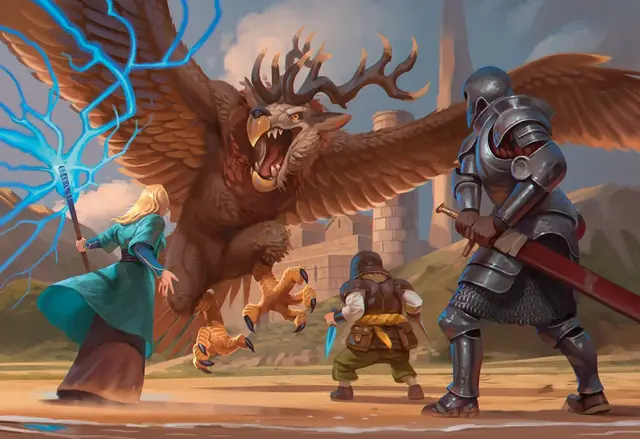

Чудовищный перитон
Monstrous Peryton
Большой Монстр, хаотично-злой

Класс Доспеха 14 (природный доспех)
Хиты 144 (17к10 + 51)
Скорость 20 футов, летая 60 футов
| мод | спас | ||
|---|---|---|---|
| СИЛ | 19 | +4 | +8 |
| ЛОВ | 14 | +2 | +6 |
| ТЕЛ | 16 | +3 | +3 |
| мод | спас | ||
|---|---|---|---|
| ИНТ | 9 | −1 | −1 |
| МДР | 14 | +2 | +6 |
| ХАР | 10 | +0 | +0 |
Навыки Восприятие +6
Чувства тёмное зрение 60 футов, пассивное Восприятие 16
Языки Общий, Эльфийский
Опасность 11 (7200 опыта)
Бонус мастерства +4
Особенности
Языки. - понимает Общий и Эльфийский, но не говорит.
Легендарное сопротивление (3/день). Если перитон проваливает спасбросок, он может вместо этого сделать спасбросок успешным.
Облет. Перитон не провоцирует атаки, когда вылетает из досягаемости врага.
Острое зрение и тонкий нюх. Перитон совершает с преимуществом проверки Мудрости (Восприятие), полагающиеся на зрение или обоняние.
Действия
Мультиатака. Перитон совершает две атаки: одну атаку Боданием, и одну атаку Когтями.
Бодание. Рукопашная атака оружием: +9 к попаданию, досягаемость 5 футов, одна цель. Попадание: 12 (2к6 + 5) колющего урона.
Когти. Рукопашная атака оружием: +9 к попаданию, досягаемость 5 футов, одна цель. Попадание: 16 (2к10 + 5) рубящего урона.
Искажающая тень. Перитон выбирает до трех существ в пределах 60 футов от себя, которых он может видеть. Каждое существо должно преуспеть в спасброске Мудрости Сл 14 , иначе станет проклятым. Будучи проклятым, всякий раз, когда существо совершает бросок атаки, проверку характеристики или спасбросок, оно должно бросить к4 и вычесть значение из общего результата броска. Проклятое существо может повторять спасбросок в конце каждого своего ход, завершая на себе эффект в случае успеха. Существо, преуспевшее в этом спасброске, становится невосприимчивым к Искажающая тени этого перитона на 24 часа.
Легендарные действия
Чудовищный перитон может совершать 3 легендарных действия, выбирая из указанных ниже вариантов. Лишь одно легендарное действие может быть совершено за раз, и только в конце хода другого существа. Чудовищный перитон восстанавливает истраченные действия в начале своего хода.
Обнаружение. Перитон совершает проверку Мудрости (Восприятие).
Атака когтем. Перитон совершает одну атаку Когтем.
Пикирующая атака (стоит 2 действия). Перитон набирает скорость и перемещается к одной цели по своему выбору. После чего он совершает атаку Боданием, которая дополнительно наносит 9 (2к8) колющего урона при попадании.
Описание
Ужас побережья и недавнее бедствие Сигнального острова из "Судьбы Таммераута", этот крупный перитон охотится как на корабли, так и на прибрежные поселения. Он построил множество гнезд, чтобы обозначить свою территорию.